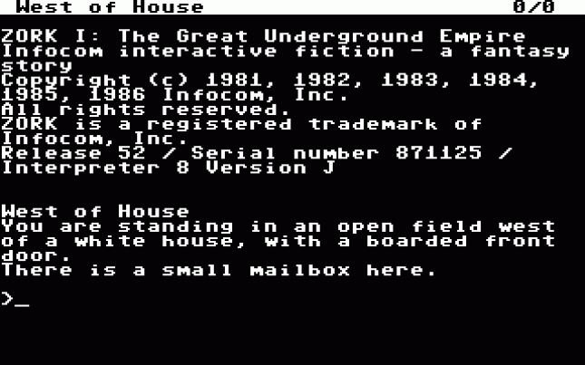
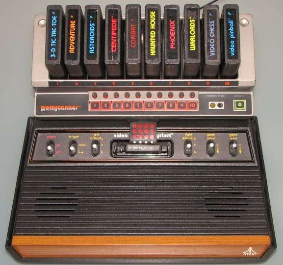
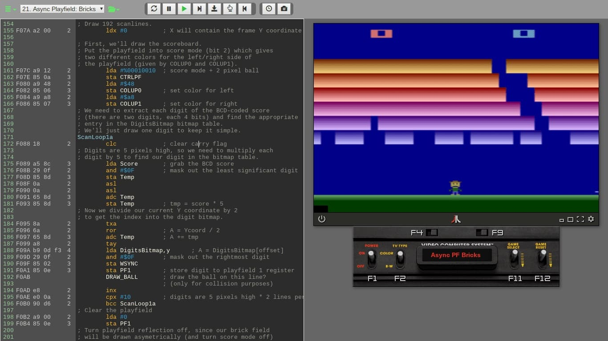
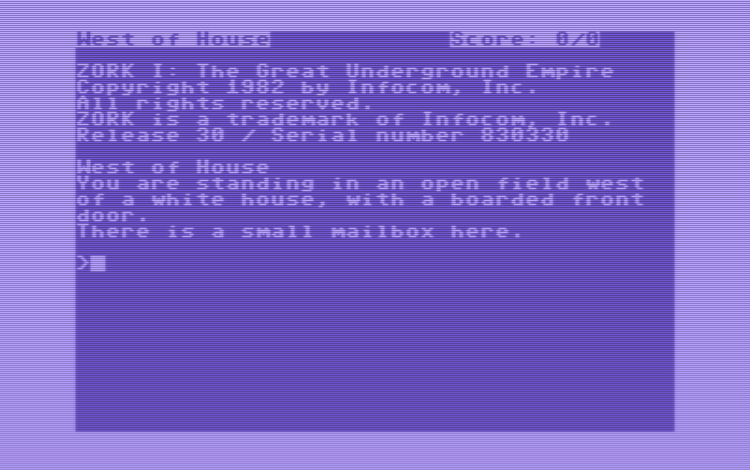
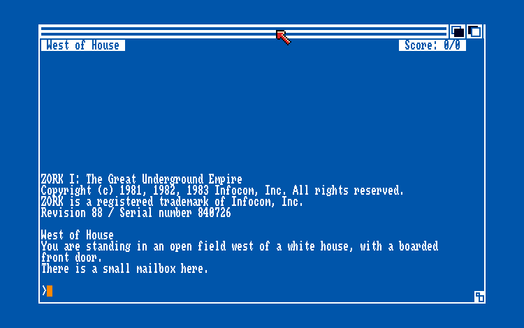
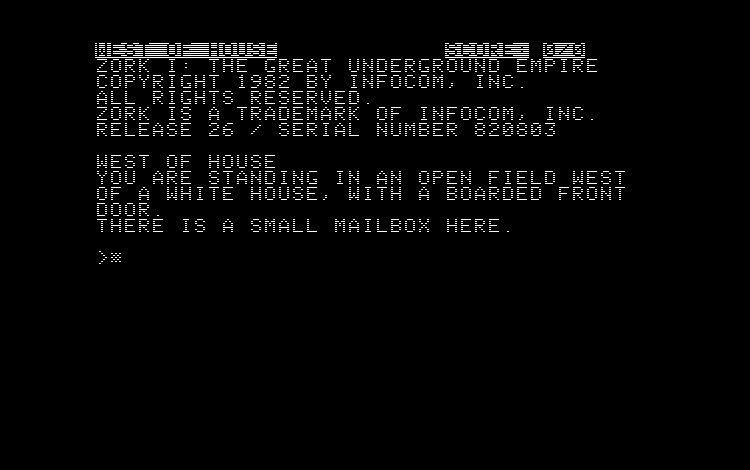
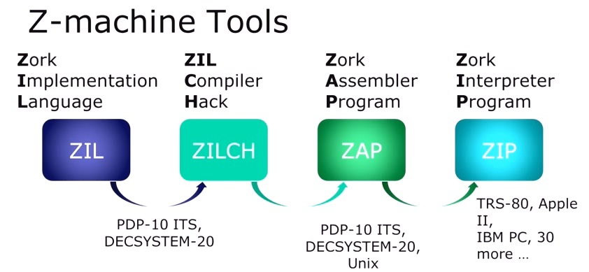

The Ontology of Rezrov

The above image shows an example of a story file (zcode) being executed by a Z-Machine interpreter. This execution of zcode is what Rezrov aims to do. Understanding the Z-Machine architecture and how zcode programs run is essential to explaining how Rezrov will operate. The Z-Machine is where this starts, though, not where it ends. There is a second machine involved, and the last part of this page is about what it is and why it had to exist.
What is Rezrov Going to Be?
Let's start with this statement: Rezrov is a Rust-based ZIP implementation that allows for the emulation of the Z-Machine. Great. But what does that mean? Let's break it down a bit.
That statement is accurate and it is also incomplete, because it accounts for the Z-Machine and nothing else. Hold onto it anyway. The Z-Machine genuinely is where this starts, and the missing half will make more sense once the groundwork is laid.
The goal of Rezrov is to be an emulator. Any emulator's goal is to execute the binary files from some specific machine directly. Let's consider another retro-gaming example. Atari 2600 cartridges contained binary files that were the instructions for how the game would play once the cartridge was plugged into a console.

What you see in that above image is actual Atari 2600 with the use of a tool called ROM Scanner. This device lets you use multiple cartridges at a time and select which one to play. Each cartridge contains code that makes up the logic of the game program, stored in binary. That binary can be pulled out of those cartridges and stored as a binary file, usually called a ROM. You can build an Atari 2600 emulator that can take one of those binary files and execute it as if it were running on an Atari 2600.

What that above image shows you is a game being played in a virtual Atari 2600, with the portion of the screen to the left showing the contents of the binary file. Those are the instructions of the game. The portion of the screen to the right shows the game being played just as it would have been had the binary been in a cartridge and had that cartridge been plugged into an actual Atari 2600 console.
What I just described there applies to any machine, such as a Gameboy or a PlayStation or whatever else. The binary files that execute on these machines are always assembly-level instructions. So what does that mean for Rezrov?
- The machine to be emulated is the Z-Machine.
- The binary files to be executed are called story files that contain zcode.
- There is also a second machine, Glulx, with story files of its own. That one gets its own section below.
Unlike the binary files for the Atari 2600, the story files in question never ran on a machine's actual processor. Instead, they ran on a virtual machine, and it was this virtual machine that ran on the actual processor. So, as an example, a (virtual) Z-Machine might be running on an (actual) Commodore 64 or an (actual) Apple II. Here's the Zork 1 zcode running on an actual Commodore 64.

And here's the same zcode running on a Commodore Amiga.

And, just for good measure, the exact same zcode running on an Apple II.

It's All About Emulation
All of the above means that the Z-Machine was never a physical computing device made of circuits; thus, it was never physical hardware. The Z-Machine was instead a virtual computing device that had to be implemented in software. That's one part of what Rezrov needs to be. Rezrov needs to be able emulate a Z-Machine.
Just as the binary files for the Atari 2600 were made up of assembly instructions for graphical games, the story files I'm referring to are made up of assembly instructions for text adventure games. These text adventure games and the Z-Machine on which they ran were created by Infocom back in the late 1970s and through most of the 1980s.
In the case of the Atari 2600, the binary files were written directly in 6502 assembly language. In the case of the story files, the assembly instructions are actually a compiled form of z-language, which was more often known as ZIL (Zork Implementation Language). This compiled assembly code is referred to as z-machine code or just zcode.
In fact, this is a form of code known as bytecode, which is code that makes up an instruction set designed to be run on a particular interpreter. This is identical to the concept of Java bytecode, which is the instruction set for code that can run on a Java Virtual Machine (JVM) via a Java Runtime Engine (JRE). The language used to create the bytecode doesn't necessarily matter. For example, you can compile Java, Groovy, or Clojure programs, which all produce bytecode that runs on the JVM. Similar to Microsoft's .NET implementation of the Common Language Runtime (CLR) that can execute compiled C#, F#, and VB.NET.
The same applies in this context. Someone can compile a story file using a tool like ZILF, Dialog, or Inform and as long as those tools produce the appropriate bytecode, that bytecode will run on the Z-Machine.
"The answer is ", 3 * total + 1;
This is essentially a statement in the high-level language of Inform, which is very different than the ZIL that Infocom was using. An equivalent ZIL might look something like this:
<SETG TOTAL <* ,TOTAL 3 >>
<SETG TOTAL <+ ,TOTAL 1 >>
<TELL "[ The answer is " N .TOTAL ".]" >)>>
However, the nature of the source code matters not at all. What matters is the bytecode. The above logic, in either case, would be rendered something like this:
@print "The answer is ";
@mul 3 total -> x;
@add x 1 -> x;
@print_num x;
@new_line;
@rtrue;
What I have there is assembly code.
But It's Also About Interpretation
Thus, a "Z-Language Interpreter" or a "ZIL Interpreter" is basically designed to execute the instruction set of the zcode, which was, in turn, intended to be executed on a Z-Machine (virtual) processor. What language was used to create that zcode is mainly irrelevant.
Rezrov will be one of those interpreters, a type of ZIP. A ZIP (Z-Language Interpreter Program) was a program, or rather a series of programs, written by Infocom. Infocom referred to their own interpreters by the following designations:
- ZIP (versions 1 to 3)
- EZIP / LZIP (version 4) ("extended" or "expanded")
- XZIP (version 5) ("experimental")
- YZIP (version 6) ("successor to X")
There was apparently a version called GZIP (Graphical ZIP). This particular ZIP was used for a one-off project from Infocom called Fooblitzky. That game was intended to be a multiplayer strategy game quite different from the text adventures for which most ZIPs were designed.
Based on surviving notes from the company, Infocom did think about the possibility of an interpreter capable of running all versions. "One interpreter to rule them all," so to speak. It's unknown how far they took this idea, but they didn't release such an interpreter, at least so far as anyone has found.
The point is that each ZIP was a program that emulated the hardware instruction set specified for the Z-Machine. Even though the Z-Machine was never actually hardware, its operation basics were just like any processor that communicated with input and output devices and performed operations via instructions.
Starting Concepts
Here are a few starting points that are crucial to understand:
- The Z-Machine is a virtual computer.
- The machine language of the Z-Machine is called zcode.
- There are six Infocom versions of the Z-Machine.
- There are two Inform versions of the Z-Machine.
- The structure and operation of zcode can differ between the versions.
- Glulx is a separate virtual computer, not a ninth version of the Z-Machine.
- Both machines are current. Neither one retired the other.
In the above, "Inform" refers to a development system that was created to allow for compiling text adventures down into a bytecode format that could be read by the Z-Machine. Many saw this tool as the successor to the Infocom compiler known as ZILCH.

That image comes from the 2014 Game Developers Conference, specifically the talk by Dave Lebling called "Classic Game Postmortem: Zork". You can also see a write up of that presentation.
The Z-Machine was originally a closed proprietary technology. The implementation of this machine, although not its general existence, was guarded closely by Infocom since this provided their competitive advantage over all other rivals at the time. It was essentially their "secret sauce." In the early to mid-1990s, when it was clear that Infocom was dissolving and would be no more, various people tried to reverse engineer what made the Infocom games work.
Regarding those versions, the Z-Machine specification says:
Eight Versions of the Z-machine exist, and the first byte of any "story file" (that is: any Z-machine program) gives the Version number it must be interpreted under.
You can think of these versions as emulations of the architecture. Consider how Apple released the Apple I (1976), Apple II (1977), Apple III (1980), and Apple Lisa (1983). Each of these was effectively an evolution of a processing architecture. The same applies to the Z-Machine versions, even though that architecture was entirely virtual.
The Z-Machine specification also tells us something quite important.
The design's cardinal principle is that any game is 100% portable to different computers: that is, any legal program exactly determines its behaviour.
In this context, a legal program refers to a program that adheres to the Z-Machine specification. The specification defines how the Z-Machine should behave, including how it should interpret and execute the instructions provided by zcode programs.
By stating that any legal program exactly determines its behavior, the specification emphasizes that the behavior of a zcode program running on the Z-Machine is entirely determined by the zcode program itself, according to the rules defined in the Z-Machine specification. This means that a zcode program should behave the same regardless of the computer or operating system it's running on, as long as the Z-Machine implementation is correct and adheres to the specification.
The Second Machine
That principle of portability is exactly why the rest of this page exists. Everything above describes the Z-Machine and all of it still holds. But the Z-Machine is not the only virtual computer Rezrov has to become, because it is not the only one this world still runs on.
Why Glulx Exists
The Z-Machine is a 16-bit design. Infocom built it for microcomputers that counted memory in kilobytes, and that assumption is welded into the architecture. Addresses are two bytes wide. Text is packed three characters to a 16-bit word. A version 8 story file can reach 512 KB, which sounds roomy right up until you read the constraint sitting underneath it:
The total of dynamic plus static memory must not exceed 64K. (In fact, 64K minus 2 bytes.)
Everything past that boundary lives in high memory and is reachable only through packed addresses. The working space a story actually has is therefore far smaller than its file size suggests, and by the 1990s authors were writing stories that ran straight into it.
The answer was versions 7 and 8, added by Graham Nelson in 1995 so that his own game Jigsaw would fit. They are not new capabilities. They change how packed addresses are scaled so that more of the file becomes reachable, and that is very nearly all they do.
Throughout the specification, Versions 7 and 8 are identical to Version 5 except as stated at 1.1.4 and 1.2.3 above.
It worked, and it was plainly the last move available on that board. So in 1999 Andrew Plotkin built a different board. Glulx is a 32-bit virtual machine with the same job to do and none of the inherited arithmetic. It is not Z-Machine version 9. It is a separate machine with its own specification, its own instruction set, and its own file format.
What Rezrov Will Target
| Machine | Version | Origin | Story file ceiling |
|---|---|---|---|
| Z-Machine | 1 to 3 | Infocom | 128 KB |
| Z-Machine | 4 and 5 | Infocom | 256 KB |
| Z-Machine | 6 | Infocom | 512 KB |
| Z-Machine | 7 and 8 | Graham Nelson, 1995 | 512 KB |
| Glulx | 3.1.3 | Andrew Plotkin, 1999 | 4 GB |
Version 7 is more curiosity than target. It was specified and then almost never used, because version 8 arrived and did the same job without the address offsets version 7 needs. Rezrov should still handle it, if only because refusing would leave an odd gap in a machine that claims to run everything.
How the Two Machines Differ
The difference that matters is not that Glulx is bigger. It is that Glulx is emptier. The Z-Machine specification describes far more than a processor. It defines what an object is, how attributes and properties are stored, how the dictionary is laid out, and how text is encoded into those packed characters. All of that is part of the machine, which is why a Z-Machine interpreter has to know what a game object is. Plotkin's design note on the subject is blunt:
Inform has long since outgrown many of the IF-specific features of the Z-machine (such as the object structure.) So it makes sense to remove those features, leaving a generic VM.
Glulx has memory, a stack, arithmetic, and branching. Objects, dictionaries, and parsers are structures the compiled program builds for itself out of raw memory, and the machine holds no opinion about any of them.
| Z-Machine | Glulx | |
|---|---|---|
| Word size | 16-bit | 32-bit |
| Identified by | First byte is the version | First four bytes are Glul |
| Object model | Defined by the machine | Built by the program |
| Dictionary | Defined by the machine | Built by the program |
| Text | ZSCII, three characters per word | Latin-1 or Unicode, optionally Huffman coded |
| Input and output | Opcodes in the specification | Handed off to Glk |
| Story file | .z1 through .z8 |
.ulx |
Glk, and Why It Matters Here
One row in that table carries more weight than the others. Glk is a separate specification, also Plotkin's, describing a portable interface for text windows, input events, styles, sound, and graphics. It arrived in 1997, two years ahead of Glulx, so Glulx was designed around it rather than the other way about.
No input/output facilities are built into the Glulx machine itself. All Glulx interpreters support the Glk I/O facility (via the glk opcode), and no other I/O facilities exist.
A single opcode, taking a function selector and a pile of arguments, hands the entire user interface over to the host. For Rezrov that is a gift with a catch attached. The Glulx half of the project needs a solid Glk implementation and very little else by way of presentation. The Z-Machine half has to implement its own screen model, because its specification insists on it.
Glk is not exclusive to Glulx. The Glk specification points out that a version 5 or 8 Z-Machine can be layered on top of it as well, with colored text the one known gap, and interpreters such as Bocfel already do exactly that. Build Rezrov's Glk layer first and build it well, and both halves can stand on it.
One Source, Two Outputs
There is a practical reason to support both machines instead of picking one. Inform, the development system mentioned earlier, compiles to either target from the same source. Inform 6 gained Glulx output in release 6.30, and Inform 7 went further than that:
Newly created projects are set up with the Glulx format.
So Glulx is the default for anything written today, while the Z-Machine holds the entire Infocom catalogue plus thirty years of community work built on top of it. These two are not a sequence in which one replaced the other. They are two live formats, and an interpreter that handles only one of them turns away half the shelf.
Both machines also travel in wrapped form. A
Blorb file
bundles the story together with its pictures, sounds, and data files
so that the whole work ships as a single thing. The convention is
.zblorb for a wrapped Z-Machine story and
.gblorb for a wrapped Glulx one. Rezrov will have to
unwrap both before it can run either.